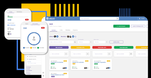

Meus Projetos
E-commerce (Demo)
Landing page de um e-commerce com vitrine de produtos, layout responsivo e componentes reutilizáveis.
Tecnologias: HTML, CSS, JavaScript
Ver Demonstração
Gerenciador de Tarefas (Demo)
Aplicação simples para criar e listar tarefas. Estrutura pensada para evoluir com armazenamento local.
Tecnologias: HTML, CSS, JavaScript
Ver DemonstraçãoApp de Finanças (Demo)
Interface para controle financeiro pessoal (entradas e saídas), com layout claro e espaço para gráficos no futuro.
Tecnologias: HTML, CSS, JavaScript
Ver DemonstraçãoHabilidades Técnicas
Tecnologias e competências que estou desenvolvendo para criar soluções web funcionais e bem estruturadas.
HTML
InicianteCSS
InicianteJavaScript
InicianteHabilidades Comportamentais
Características que aplico no dia a dia e em projetos.
Entre em contato
Quer conversar sobre algum projeto ou oportunidade? Fique à vontade para entrar em contato.